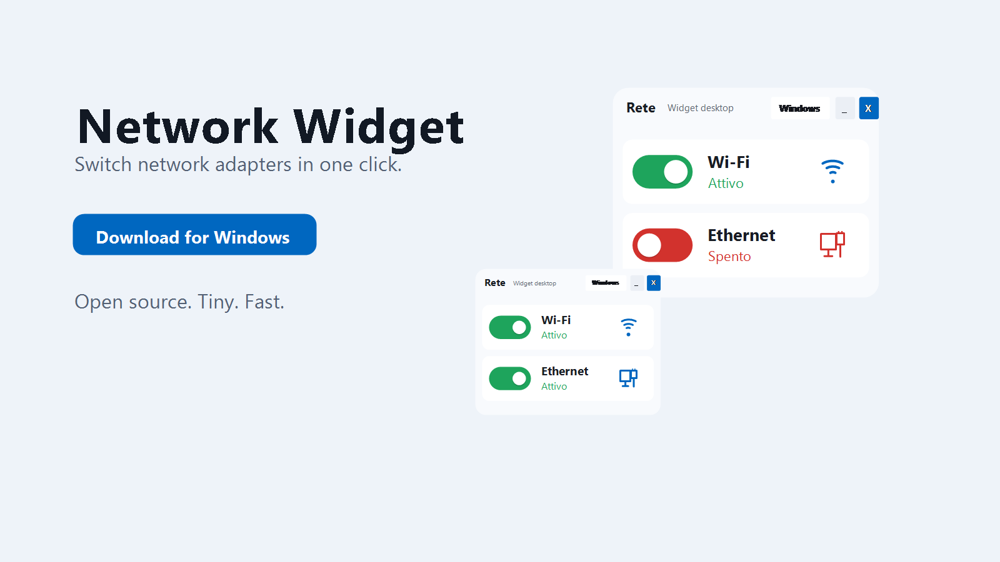
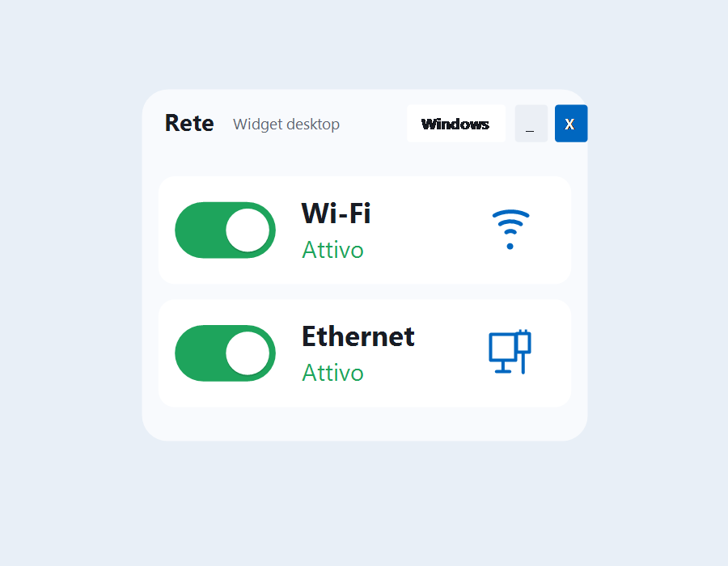
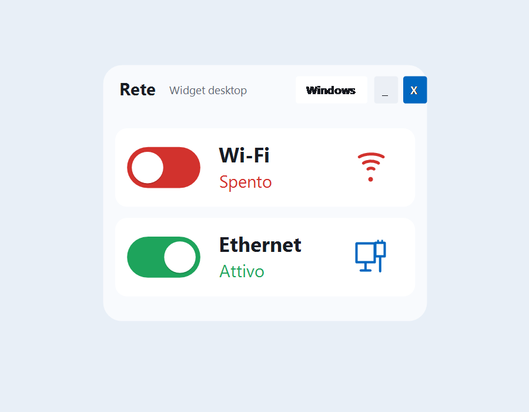

Open source Windows utility
Network Widget
Switch Wi-Fi and Ethernet from a compact desktop widget, without digging through Windows Settings.

One-click switching
Enable or disable Wi-Fi and Ethernet adapters directly from the desktop.
Built for daily use
Move it, resize it, minimize it to the notification area, and start it with Windows.
Clear adapter states
Green means active. Red means disabled. No hunting through network menus.

